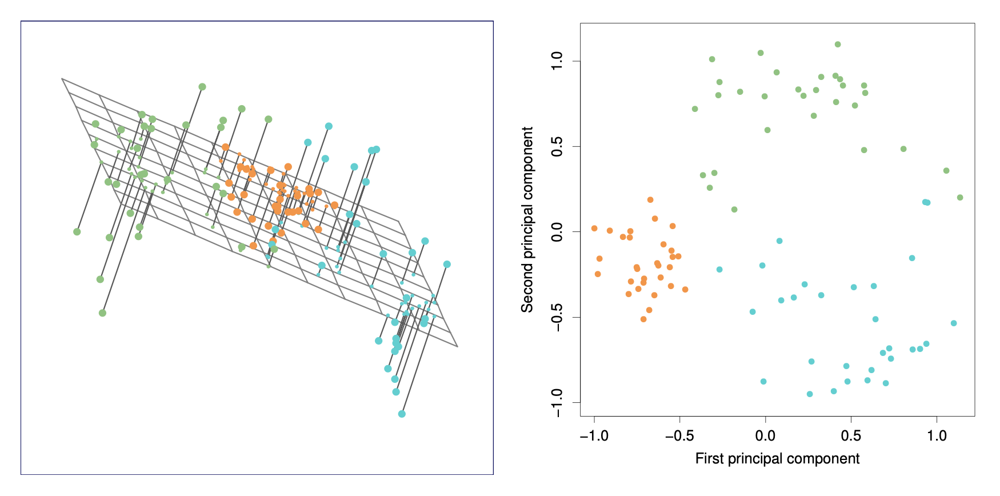
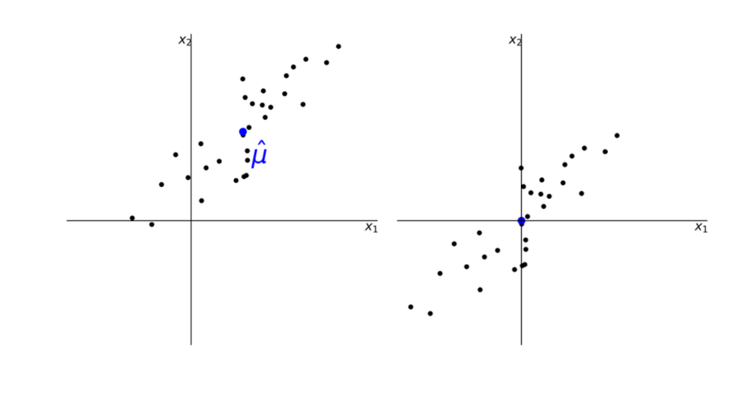
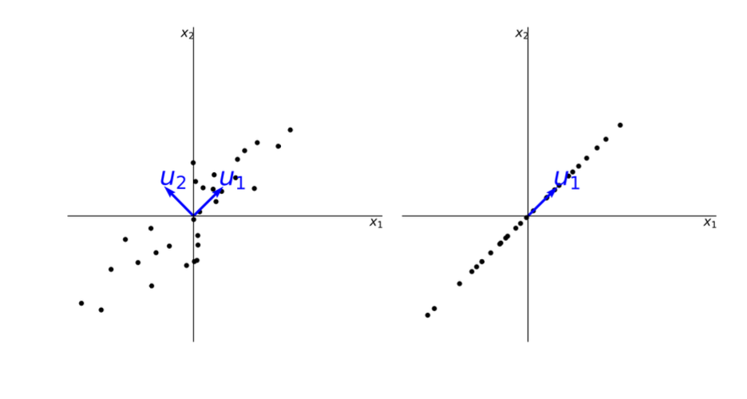
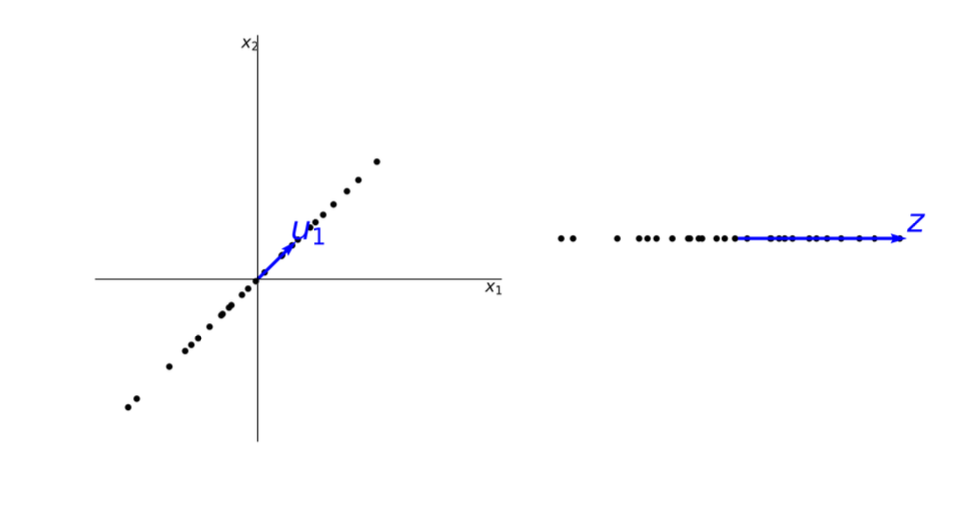
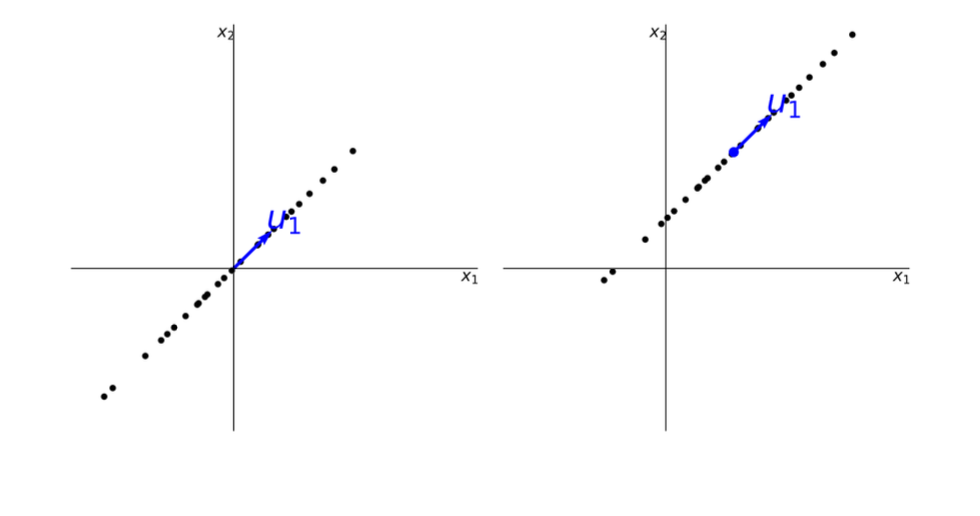
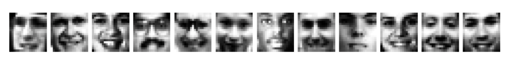
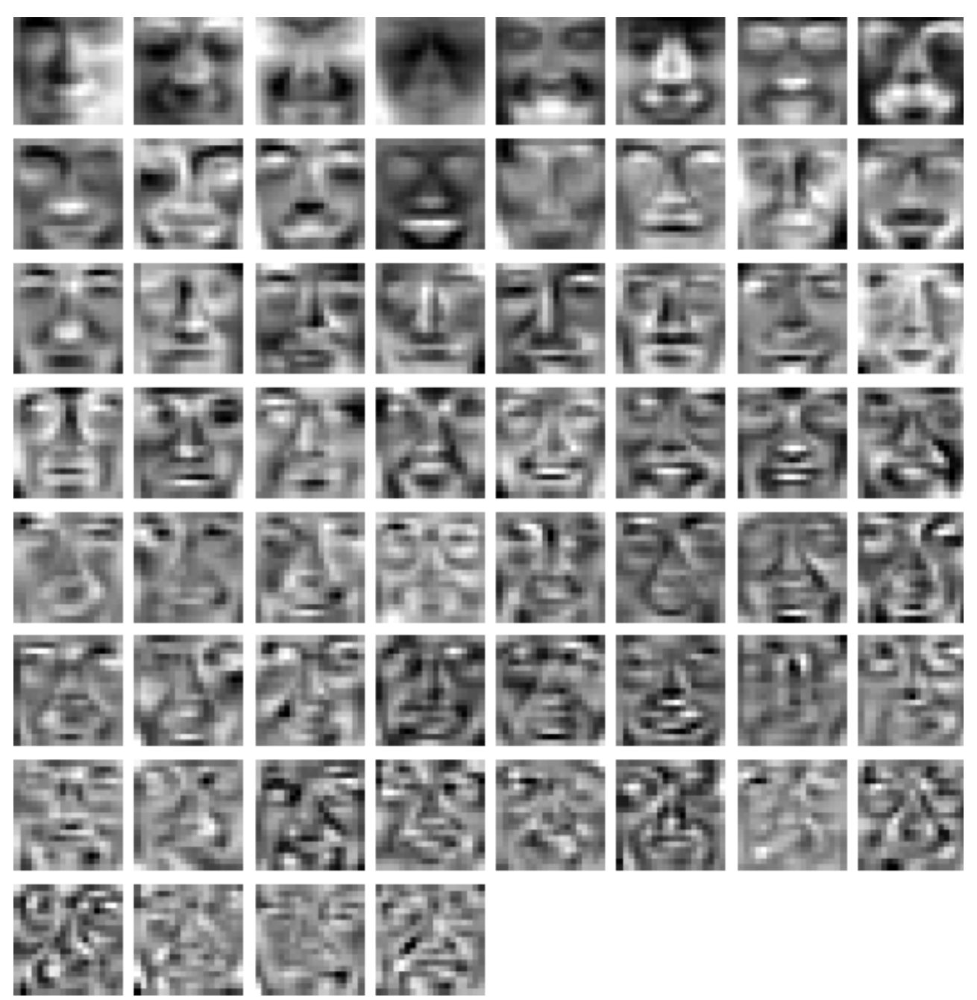
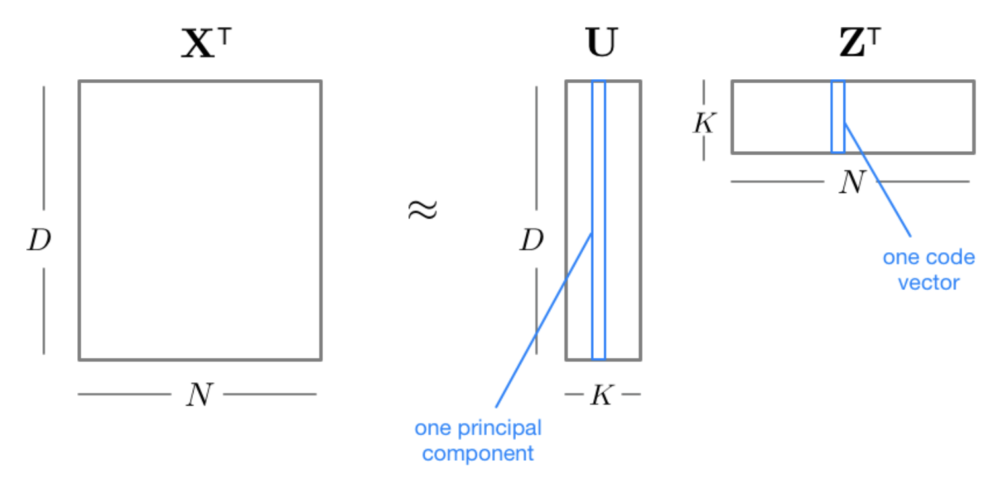
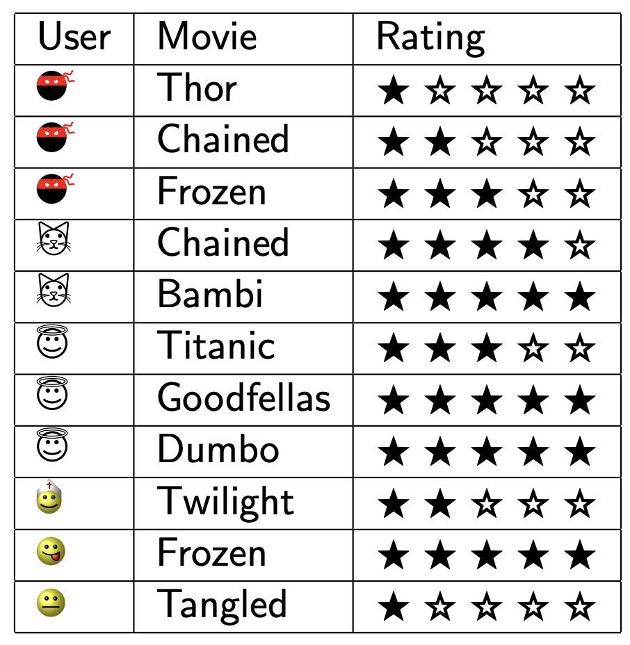
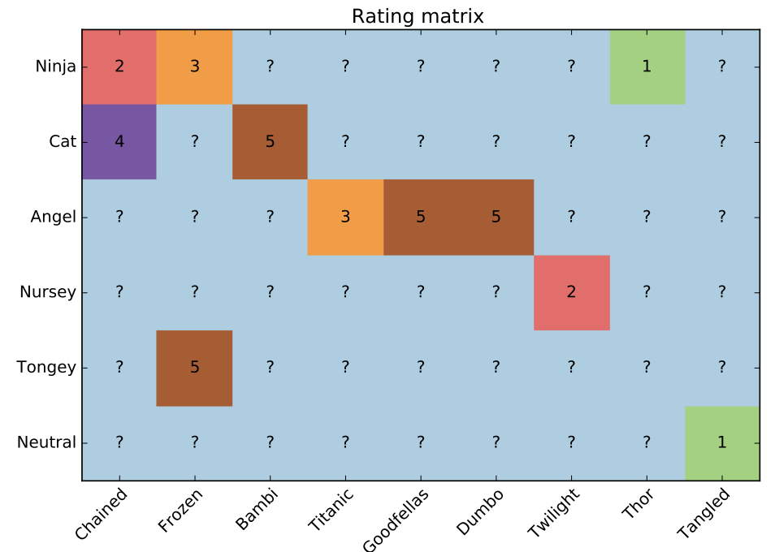

Week 11
Goal: Partition observations into \(K\) groups so that observations within each cluster are similar.
Choose cluster assignments \(C_1,\ldots,C_K\) to minimize the within-cluster sum of squares:
\[ \min_{C_1,\ldots,C_K}\sum_{k=1}^K\sum_{i\in C_k}\|\mathbf x_i-\boldsymbol\mu_k\|_2^2. \]
Elbow method
Silhouette index
\[s(i)=\frac{b(i)-a(i)}{\max\{a(i),b(i)\}}.\]
By the end of this lecture, you should be able to:
PCA is unsupervised. It summarizes variation in \(\mathbf X\); it does not use an outcome \(Y\)
\[ \mathbf X=\begin{bmatrix} (\mathbf x^{(1)})^\top\\ (\mathbf x^{(2)})^\top\\ \vdots\\ (\mathbf x^{(N)})^\top \end{bmatrix}\in\mathbb R^{N\times D}. \]
\[\hat{\boldsymbol\mu}=\frac1N\sum_{i=1}^N\mathbf x^{(i)}.\]
\[\hat{\boldsymbol\Sigma}=\frac{1}{N-1}\sum_{i=1}^N(\mathbf x^{(i)}-\hat{\boldsymbol\mu})(\mathbf x^{(i)}-\hat{\boldsymbol\mu})^\top.\]

Find a low-dimensional representation of your data
For each feature \(j\), subtract its sample mean:
\[ \bar x_j=\frac1n\sum_{i=1}^n x_{ij},\qquad x_{ij}^{c}=x_{ij}-\bar x_j. \]

\[ x_{ij}^{\mathrm{std}}=\frac{x_{ij}-\bar x_j}{s_j}. \]

Let \(\mathbf u_1\) be the unit direction of greatest variance, and let \(\mathbf u_2\) be orthogonal to it.
With orthonormal directions \(\mathbf Q=[\mathbf u_1\ \mathbf u_2]\):
\[ \operatorname{Proj}_{\mathbf u_1} =\mathbf Q\begin{pmatrix}1&0\\0&0\end{pmatrix}\mathbf Q^\top =\mathbf u_1\mathbf u_1^\top. \]

Coordinates \(z=\mathbf u_1^\top(\mathbf x-\hat{\boldsymbol\mu})\) along the direction \(\mathbf{u_1}\) are lower dimensional representations of \(\mathbf{x}\).
The projection \(\mathbf u_1\mathbf u_1^\top(\mathbf x-\hat{\boldsymbol\mu})\) maps the centered observation back onto the principal component direction in the original feature space.

Now we have an approximation of our original observation using only one score instead of all original features.
We’ve done Principal Component Analysis (PCA)!
To get a low dimensional reconstruction for \(\mathbf{x}\):
Now let’s get into the details.
Consider a linear combination of the \(D\) centered features:
\[ Z_{1}=u_{11}X_1^c+u_{21}X_2^c+\cdots+u_{D1}X_D^c. \]
For observation \(i\), its value along the first component is:
\[ z_{1}^{(i)}=\sum_{j=1}^D u_{j1}x_{j,c}^{(i)} =(\mathbf{x}_c^{(i)})^\top\mathbf{u}_1. \]
The first PC finds the linear combination with the largest variance:
\[ \boxed{ \max_{u_{11},\ldots,u_{D1}} \frac1N\sum_{i=1}^N \left(\sum_{j=1}^Du_{j1}x_{j,c}^{(i)}\right)^2 \quad\text{subject to}\quad \sum_{j=1}^Du_{j1}^2=1. } \]
We show this optimization problem in matrix notation.
Let \(\hat{\boldsymbol\Sigma}=\frac{1}{N-1}\mathbf X_c^\top\mathbf X_c\) be the sample covariance matrix.
Recall that the first principal component finds the direction \(\mathbf u_1\) along which the projected data has the greatest variance.
Mathematically, we solve:
\[ \max_{\mathbf u_1} \mathbf u_1^\top\hat{\boldsymbol\Sigma}\mathbf u_1 \quad \text{subject to} \quad \mathbf u_1^\top\mathbf u_1=1. \]
\[ \hat{\boldsymbol\Sigma}\mathbf u_1 =\lambda_1\mathbf u_1 \]
PCA finds directions of maximum variance by computing the eigenvectors of the sample covariance matrix.
\[ z_m^{(i)}=\sum_{j=1}^D u_{jm}x_{j,c}^{(i)} =(\mathbf x_c^{(i)})^\top\mathbf u_m. \]
\[ \hat{\boldsymbol\Sigma}\mathbf u_m=\lambda_m\mathbf u_m. \]
\[ \max_{\mathbf u_m}\quad \mathbf u_m^\top\hat{\boldsymbol\Sigma}\mathbf u_m \quad\text{subject to}\quad \begin{cases} \|\mathbf u_m\|_2=1,\\ \mathbf u_m^\top\mathbf u_\ell=0,\quad \ell<m. \end{cases} \]
The eigenvalue \(\lambda_m\) gives the variance explained by PC\(m\), with \(\lambda_1\geq\lambda_2\geq\cdots\geq 0\).
Because the loading vectors are orthogonal eigenvectors of the covariance matrix, the resulting principal components are uncorrelated
\[ \mathbf z^{(i)}=\mathbf U^\top(\mathbf x^{(i)}-\hat{\boldsymbol\mu}). \]
\[ \tilde{\mathbf x}^{(i)} =\hat{\boldsymbol\mu}+\mathbf U\mathbf z^{(i)} =\hat{\boldsymbol\mu}+ \sum_{m=1}^M z_m^{(i)}\mathbf u_m. \]
We have defined PCA to find directions that maximize the variance of the projected data.
Equivalently, PCA finds the \(M\)-dimensional representation that minimizes reconstruction error:
\[ \min_{\operatorname{rank}(\hat{\mathbf X}_c)\leq M} \|\mathbf X_c-\hat{\mathbf X}_c\|_F^2. \]
\[ \tilde{\mathbf x}_c^{(i)} =\sum_{m=1}^M z_m^{(i)}\mathbf u_m. \]
\[ \|\mathbf x_c^{(i)}\|_2^2 = \|\tilde{\mathbf x}_c^{(i)}\|_2^2 + \|\mathbf x_c^{(i)}-\tilde{\mathbf x}_c^{(i)}\|_2^2. \]
Consider running PCA on 2429 19x19 greyscale images (CBCL data)
We can get a good reconstruction with only 3 components

PCA for pre-processing: we can apply a classifier to latent representation
Principal components of face images (“eigenfaces”)

\[\mathbf X_c\approx\mathbf Z\mathbf U^\top.\]
Recall PCA: project data onto a low-dimensional subspace defined by the top eigenvectors of the data covariance matrix.
We consider a generalization, matrix factorization:
\[ \mathbf x^{(i)}\approx\tilde{\mathbf x}^{(i)} =\hat{\boldsymbol\mu}+\mathbf U\mathbf z^{(i)}. \]
where:
\(\hat{\boldsymbol\mu}=\frac1N\sum_i\mathbf x^{(i)}\) is the data mean.
\(\mathbf U\in\mathbb R^{D\times K}\) is the orthogonal basis for the principal subspace (loading vectors).
\(\mathbf z^{(i)}\in\mathbb R^K\) is the code vector.
\(\tilde{\mathbf x}^{(i)}\in\mathbb R^D\) is the reconstruction or approximation of \(\mathbf x^{(i)}\).
Assume for simplicity that the data is centered: \(\hat{\boldsymbol\mu}=\mathbf0\). Then the approximation looks like
\[ \mathbf x^{(i)}\approx\tilde{\mathbf x}^{(i)} =\mathbf U\mathbf z^{(i)}. \]
\[ \mathbf x^{(i)}\approx\mathbf U\mathbf z^{(i)}. \]
\[ \mathbf X= \begin{bmatrix} (\mathbf x^{(1)})^\top\\ (\mathbf x^{(2)})^\top\\ \vdots\\ (\mathbf x^{(N)})^\top \end{bmatrix} \in\mathbb R^{N\times D} \quad \text{and} \quad \mathbf Z= \begin{bmatrix} (\mathbf z^{(1)})^\top\\ (\mathbf z^{(2)})^\top\\ \vdots\\ (\mathbf z^{(N)})^\top \end{bmatrix} \in\mathbb R^{N\times K}. \]
\[ \sum_{i=1}^N \|\mathbf x^{(i)}-\mathbf U\mathbf z^{(i)}\|_2^2 = \|\mathbf X-\mathbf Z\mathbf U^\top\|_F^2. \]

Based on the sizes of the matrices, this is a rank-\(K\) approximation.
Since \(\mathbf U\) was chosen to minimize reconstruction error, this is the optimal rank-\(K\) approximation, in terms of error \(\|\mathbf X^\top-\mathbf U\mathbf Z^\top\|_F^2.\)
movie recommendation.

Matrix completion problem: Transform the table into an \(N\) users by \(M\) movies matrix \(\mathbf R\).

Data: Users rate some movies. \(R_{\text{user,movie}}\) is very sparse.
Task: Predict missing entries, i.e., how a user would rate a movie they haven’t previously rated.
Evaluation Metric: Squared error (used by Netflix Competition). Is this a reasonable metric?
In our current setting, latent factor models attempt to explain the ratings by characterizing both movies and users on a number of factors \(K\) inferred from the ratings patterns.
That is, we seek representations for movies and users as vectors in \(\mathbb R^K\) that can ultimately be translated to ratings.
Can we use the sparse ratings matrix \(\mathbf R\) to find these latent factors automatically?
Assume the rating user \(i\) gives to movie \(j\) is given by a dot product: \(R_{ij}\approx\mathbf u_i^\top\mathbf z_j.\)
In matrix form, if
\[ \mathbf U= \begin{bmatrix} \mathbf u_1^\top\\ \vdots\\ \mathbf u_N^\top \end{bmatrix} \qquad\text{and}\qquad \mathbf Z^\top= \begin{bmatrix} \mathbf z_1 & \cdots & \mathbf z_M \end{bmatrix}, \]
then:
\[ \boxed{\mathbf R\approx\mathbf U\mathbf Z^\top.} \]
\[ \min_{\mathbf U,\mathbf Z} \|\mathbf X^\top-\mathbf U\mathbf Z^\top\|_F^2 = \sum_{i,j} (x_{ji}-\mathbf u_i^\top\mathbf z_j)^2. \]
Let \(\mathcal O=\{(i,j):\text{entry }(i,j)\text{ of matrix }\mathbf R\text{ is observed}\}\).
Using the squared error loss, matrix completion requires solving:
\[ \boxed{ \min_{\mathbf U,\mathbf Z} \frac12\sum_{(i,j)\in\mathcal O} (R_{ij}-\mathbf u_i^\top\mathbf z_j)^2. } \]
Alternating Least Squares (ALS): Fix \(\mathbf Z\) and optimize \(\mathbf U\), followed by fixing \(\mathbf U\) and optimizing \(\mathbf Z\), and so on until convergence.
Want to minimize the squared error cost with respect to the factor \(\mathbf U\). (The case of \(\mathbf Z\) is exactly symmetric.)
We can decompose the cost into a sum of independent terms:
\[ \sum_{(i,j)\in\mathcal O} (R_{ij}-\mathbf u_i^\top\mathbf z_j)^2 = \sum_i \underbrace{ \sum_{j:(i,j)\in\mathcal O} (R_{ij}-\mathbf u_i^\top\mathbf z_j)^2 }_{\text{only depends on }\mathbf u_i}. \]
This can be minimized independently for each \(\mathbf u_i\).
\[ \boxed{ \mathbf u_i= \left( \sum_{j:(i,j)\in\mathcal O} \mathbf z_j\mathbf z_j^\top \right)^{-1} \sum_{j:(i,j)\in\mathcal O} R_{ij}\mathbf z_j. } \]
ALS for Matrix Completion problem
\[ \mathbf u_i= \left( \sum_{j:(i,j)\in\mathcal O} \mathbf z_j\mathbf z_j^\top \right)^{-1} \sum_{j:(i,j)\in\mathcal O} R_{ij}\mathbf z_j. \]
\[ \mathbf z_j= \left( \sum_{i:(i,j)\in\mathcal O} \mathbf u_i\mathbf u_i^\top \right)^{-1} \sum_{i:(i,j)\in\mathcal O} R_{ij}\mathbf u_i. \]
Announcements: Assignment 2 is now available on the course website (due Dec. 2nd)